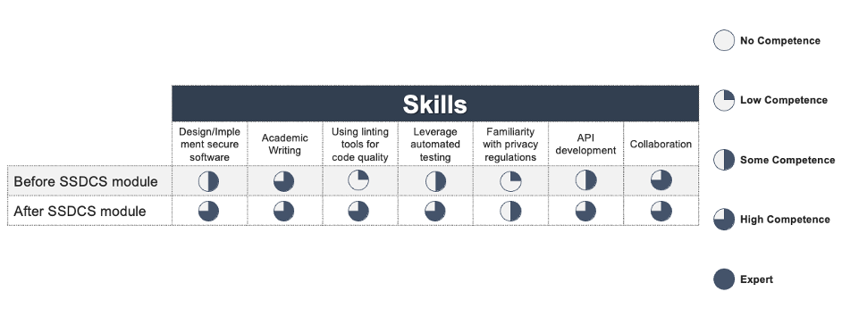

Reflections on the Software Engineering Project Management module, and own self-development

In this individual reflection, I outline the knowledge, skills, and lessons I gained by undertaking the “Secure Software Development” module, as a part of my Master’s degree course in Computer Science at the University of Essex. Moreover, I describe how I improved my skills in secure software development to design and implement a RESTful application programming interfaces (API) in Python (Subramanian & Raj, 2019) and command line interface (CLI)-based applications (Reitz & Schlusser, 2016). I pondered on the lessons learnt from my interactions and work with a few colleagues in a team work to build a secure CLI-based application aligned with the use case of internet forensics for the Dutch Police. I will explain how I further enhanced my software engineering skills, whilst ensuring security by design to protect users’ personal data (Martin & Kung, 2018), and my soft skills, especially communication, time management, project management, including the application of Agile methodologies, and presentation.
To ensure my lessons learnt and reflections are structured in a logical and coherent manner, I leveraged the pragmatic approach of Rolfe et al. (2001) in reporting them, as well as the nursing-like methodology to steer the reflections towards gaining actionable insights from them to improve both my technical/hard and soft skills (Choperena et al., 2019), since software development does not have a specific model for articulating these reflections, besides a verbal Scrum retrospective in Agile (Holtzblatt & Marsden, 2022).
I included all artefacts, which involve both design, implementations, and testing of codes, on GitHub at this link; moreover, the secure CLI-based application I built with a few team members as a part of an assignment is available on GitHub at this link. As a part of this CLI-based application, I added all testing scripts that I wrote to perform automated unit testing under this directory on GitHub. Furthermore, I carried out regular vulnerability scans via the ‘safety’ library on the open-source libraries in Python (Ponta et al., 2020) we added as dependencies, as per the screenshots under this folder on GitHub. I leveraged two listing tools (the ‘flake8’ and ‘pylint’ libraries) to perform automated code quality checks (Kapil, 2019) and improved them accordingly, as per the screenshots under this directory on GitHub.
Differently from the design proposal and as per the lecturer’s feedback, in this final project, I implemented multi-threading to enable concurrent execution or parallelisation of the operations (Malakhov, 2016) by at least two concurrent users and I created a centralised global logger to output logs of various levels (error/warning/info/debug) both to a .log file and on the console for aiding application monitoring and debugging. Whilst we adhered to security-related standards in the practical code implementation, such as the OWASP principles (OWASP, 2017, 2021) and ISO/IEC 27000 (Meriah & Rabai, 2019), which were discussed in the design proposal, we did not explicitly referenced them in the codes implemented, although we listed that we complied with the General Data Protection Regulations (GDPR) in the codes (Hjerppe et al., 2019). In fact, we incorporated the ability for a user to see the personal data that are stored on them in the database, as well as the option to request their deletion, giving the organisation storing them 30 days to respond to this request (Hjerppe et al., 2019).
As kindly noted by the lecturer, implementing role-based access control, wherein users belonging to a specific group would be assigned certain permissions that are related to their role and group, multi-factor authentication, and obfuscating the data that users enter from the front-end would make the application more secure and usable (Morton, 2022), whilst leveraging the model-view-controller (MVC) design pattern, which is suitable for API development using the Python library ‘Flask’ (Mufid et al., 2019), would enhance the clarity of the folders’ structure, thus making the application more maintainable and testable.
Nevertheless, as a part of the team, I was able to drive the meetings and written communications, leveraging my team members’ skillset and expertise to ensure each member contributed towards the shared goal to achieve a secure CRUD-functional CLI-based application. Thus, despite initial challenges regarding communication and prioritisation due to contrasting design-related ideas, I was able to overcome them by articulating the value of designing a CLI-based application to fulfil the above-mentioned goal faster, as opposed to including a user interface as well, whilst handling encrypted data and enabling multi-threading. I took full ownership of my tasks and demonstrated initiative in delivering further tasks, such as implementing a central global logger and unit testing own codes and those of others involving encryption and data validation, also linting the codes and, thus, improving their quality and security.
Furthermore, I leveraged the programming-related activities throughout the module to benefit our team’s assignment, such as the use of the linters ‘flake8’ and ‘pylint’ (Kapil, 2019), which the lecturer had kindly introduced, I thoroughly enjoyed the interactions with the lecturer and my colleagues during interesting and useful collaborative discussions. In the first discussion, I applied what I learnt regarding the Unified Modelling Language (UML) to create a sequence diagram illustrating the key steps leading to cryptographic failures, which was deemed appropriate to visualise the main steps involved in ‘sensitive data exposure’ (OWASP, 2017, 2021). Throughout my interactions during the first collaborative discussion, and by reviewing my peers’ posts and providing my feedback, I learnt to appreciate the importance of staying abreast with the latest advances in security-related assessments and best practices, and of thinking like a cyberattacker, to leverage both types of systematic and intuitive insights to ensure that the software designed and implemented is robust to the latest most frequent cyberattacks, as much as possible. During the second collaborative discussion, I had the chance of reviewing the case study regarding ‘TrueCrypt’ and design its ontology to understand the causes based on the users’ operations that can lead to exploiting its security vulnerabilities to retrieve users’ data (Colp et al., 2015; Zhang et al., 2019), and thus recommended using ‘VeraCrypt’, which is a more secure fork of TrueCrypt in an attempt of resolving the security vulnerabilities identified in TrueCrypt (Kedziora et al., 2017). In this instance, by interacting with my peers, I had the opportunity of reviewing further applications that can ensure an adequate encryption of personal files in operating systems, such as FileVault 2 for MacOS./p>
To quantify how my relevant skills were improved via the lessons learnt in this module on Secure Software Development, please see my skills matrix in Fig. 1. below.
Figure 1. How my relevant skills were enhanced by undertaking the ‘Secure Software Development’ module.
References
Choperena, A., Oroviogoicoechea, C., Zaragoza Salcedo, A., Olza Moreno, I., & Jones, D. (2019) Nursing narratives and reflective practice: A theoretical review. Journal of Advanced Nursing 75(8): 1637-1647.
Colp, P., Zhang, J., Gleeson, J., Suneja, S., De Lara, E., Raj, H., ... & Wolman, A. (2015) Protecting data on smartphones and tablets from memory attacks. In Proceedings of the Twentieth International Conference on Architectural Support for Programming Languages and Operating Systems (pp. 177-189).
Hjerppe, K., Ruohonen, J., & Leppänen, V. (2019) The general data protection regulation: requirements, architectures, and constraints. In 2019 IEEE 27th International Requirements Engineering Conference (RE) (pp. 265-275). IEEE.
Holtzblatt, K., & Marsden, N. (2022) Building Resilience: Team Manifesto and Process Checks. In Retaining Women in Tech (pp. 211-223). Springer, Cham.
Kapil, S. (2019) Debugging and Testing Python Code. In Clean Python (pp. 221-251). Apress, Berkeley, CA.
Kedziora, M., Chow, Y. W., & Susilo, W. (2017) Improved threat models for the security of encrypted and deniable file systems. In International Conference on Mobile and Wireless Technology (pp. 223-230). Springer, Singapore.
Malakhov, A. (2016) Composable multi-threading for Python libraries. In Proceedings of the 15th Python in Science Conference, Austin, TX, USA (pp. 11-17).
Martin, Y. S., & Kung, A. (2018) Methods and tools for GDPR compliance through privacy and data protection engineering. In 2018 IEEE European symposium on security and privacy workshops (EuroS&PW) (pp. 108-111). IEEE.
Meriah, I., & Rabai, L. B. A. (2019) Comparative study of ontologies based iso 27000 series security standards. Procedia Computer Science 160: 85-92.
Morton, A. (2022) Managing Security and Access Control. In Mastering Snowflake Solutions (pp. 67-98). Apress, Berkeley, CA.
Mufid, M. R., Basofi, A., Al Rasyid, M. U. H., & Rochimansyah, I. F. (2019) Design an MVC model using python for flask framework development. In 2019 International Electronics Symposium (IES) (pp. 214-219). IEEE.
OWASP (2017) A3 Sensitive Data Exposure. Retrieved from https://cwe.mitre.org/data/definitions/1029.html.
OWASP (2021) A02 Cryptographic failures. Retrieved from https://owasp.org/Top10/A02_2021-Cryptographic_Failures/.
Ponta, S. E., Plate, H., & Sabetta, A. (2020) Detection, assessment and mitigation of vulnerabilities in open source dependencies. Empirical Software Engineering 25(5): 3175-3215.
Reitz, K., & Schlusser, T. (2016) The Hitchhiker's guide to Python: best practices for development. O'Reilly Media, Inc.
Rolfe, G., Freshwater, D. & Jasper, M. (2001) Critical reflection in nursing and the helping professions: a user’s guide. Basingstoke: Palgrave Macmillan.
Subramanian, H., & Raj, P. (2019) Hands-On RESTful API Design Patterns and Best Practices: Design, develop, and deploy highly adaptable, scalable, and secure RESTful web APIs. Packt Publishing Ltd.
Zhang, L., Deng, X., & Tan, C. (2019) An extensive analysis of TrueCrypt encryption forensics. In Proceedings of the 3rd International Conference on Computer Science and Application Engineering (pp. 1-6).